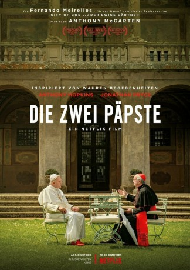

gesehen am 30.12.2019
gesehen am 30.12.2019Alternativ: The Two Popes (Englischer Titel) gesehen am 30.12.2019
 
 IMDB-Wertung: 7.7 / 10
IMDB-Wertung: 7.7 / 10  Tomatometer: 89
Tomatometer: 89  Metascore:
Metascore: 
Kardinal Bergoglio (Jonathan Pryce) ist von der Leitung der katholischen Kirche enttäuscht und bittet Papst Benedikt (Anthony Hopkins) um die Erlaubnis, 2012 in den Ruhestand zu treten. Stattdessen beruft der nachdenkliche Papst Benedikt seinen schärfsten Kritiker und zukünftigen Nachfolger nach Rom, um ein Geheimnis preiszugeben, das die Grundfeste der katholischen Kirche erschüttern würde. Hinter den Mauern des Vatikans beginnt ein Kampf zwischen Tradition und Fortschritt, Schuld und Vergebung, da diese beiden sehr unterschiedlichen Männer sich mit ihrer Vergangenheit auseinandersetzen, um Gemeinsamkeiten zu finden und eine Zukunft für eine Milliarde Anhänger auf der ganzen Welt zu schmieden. Der Argentinier wird Nachfolger des Deutschen Benedikt XVI., hegte aber zunächst Zweifel, ob er das Amt übernehmen soll. Schließlich wurde er der erste lateinamerikanische Papst und auch der erste Papst, der dem Orden der Jesuiten angehört.
Jahr: 2019
Dauer: 125 Minuten
FSK: 12
Land: England Studio: NetflixTonspuren: - , - ,
Untertitel: Englisch, Deutsch, Französisch, , ,
Auflösung: 1080p (1920x1080) Größe: 7280 MB
Genre: Drama, Komödie, Biographie
Regisseur: Fernando Meirelles
Drehbuch: Anthony McCarten
Soundtrack: Bryce Dessner
Darsteller:
 Anthony Hopkins als Cardinal Ratzinger / Pope Benedict
Anthony Hopkins als Cardinal Ratzinger / Pope Benedict Jonathan Pryce als Cardinal Jorge Bergoglio / Pope Francis
Jonathan Pryce als Cardinal Jorge Bergoglio / Pope Francis Renato Scarpa als Camerlengo
Renato Scarpa als CamerlengoDatei: X:\2019(N-Z)\Zwei Päpste, Die (2019, FSK12, 1920x1080).mkv seit 30.12.2019
Festplatte: HD 2018(G-Z)-2019(A-Z)
 Es gibt insgesamt 62 Filme in der Gruppe '2019(N-Z)'
Es gibt insgesamt 62 Filme in der Gruppe '2019(N-Z)'